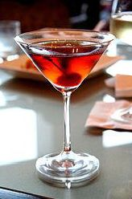

O Manhattan é um cocktail sofisticado e equilibrado que representa a elegância da coquetelaria americana clássica.
Método de Preparo
GuarniçãoDecore com uma cereja de cocktail. |
 |
A história popular sugere que a bebida originou-se no Manhattan Club em Nova York em meados da década de 1870, onde foi inventada por Iain Marshall para um banquete organizado por Jennie Jerome (Lady Randolph Churchill, mãe de Winston) em honra do candidato presidencial Samuel J. Tilden.